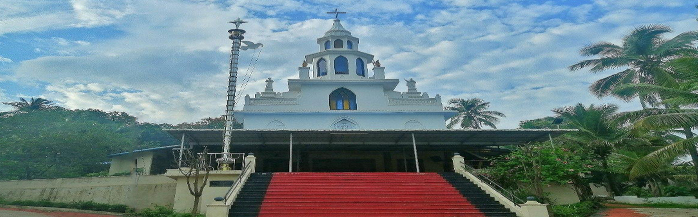

 HOLLY MASS
HOLLY MASS| Day | Morning | Afternoon |
|---|---|---|
| Tuesday | 9.15 AM-Holy Mass & Novena, 9.15 AM- Novena, 10.45 AM-Holy Mass & Novena | 3.30 PM- Novena, 4.30 PM-Holy Mass & Novena, 7.00 PM-Holy Mass & Novena |
| Sunday | 8.30Am | Nil |
| Otherdays | 7.00 Am |
Priest will be available on every Tuesday from 9.00 AM to 1.00 PM
O holy St. Anthony, you are known for the power and
abundance of your miracles. Jesus came into your arms as a humble little child. Pray for
me to the Child Jesus for my needs and desires
O’ Gracious St. Anthony, we praise you for your great virtues and remarkable humility. With the help of Jesus nothing is impossible with you. So we know that, sickness and death, perils and snares, evils and dangers disappear through your intercession. You find what is lost, you comfort the afflicted and you help the worst of the sinners to repent. There is nothing impossible for you O’ dear Saint Anthony. O’ faithful friend of Baby Jesus please be our support, our patron and our eternal benefactor. Procure all our needs, both material and spiritual from the Heavenly Father through your kind and powerful intercession, And more especially, the one we beg of you now …(Specify the intention here) O’ most loving and gentle Saint, We will always proclaim your blessings with a grateful heart. We command our body and soul, our whole self, and all that we have, to your care. It is never heard that you have disowned anyone. Protect us from all dangers. Help us to face life and its problems with serenity and to live a virtuous life without any taint of sin. May you be our stronghold, in our moments of temptation. Give us a loving and generous heart. Finally we pray to you to give us the readiness of heart To share all the good that we receive With our poor and needy brothers and sisters. Amen. 3 Our Father 3 Hail Mary 3 Glory be to
ഓ! ധന്യനായ വിശുദ്ധ അന്തോനീസേ നന്മകളുടെ നിറകുടവും എളിമയുടെ ദർപ്പണവുമായ അങ്ങയെ ഞങ്ങൾ സ്തുതിക്കുന്നു. അങ്ങേ മധ്യസ്ഥതയിൽ രോഗവും മരണവും അബദ്ധവും അനർത്ഥങ്ങളും ഇല്ലാതാകുന്നു എന്ന് ഞങ്ങൾ അറിയുന്നു. നഷ്ടപെട്ട വസ്തുക്കൾ വീണ്ടെടുക്കുന്നതിനും ദുഃഖിതർക്കു ആശ്വാസവും പാപികൾക്ക് അനുതാപവും നൽകുന്നതിനും കഴിവുള്ള അങ്ങേക്ക് അസാധ്യമായി ഒന്നുമില്ല. ഉണ്ണീശോയുടെ വിശ്വസ്ത സ്നേഹിതനായ വിശുദ്ധ അന്തോനീസേ അങ്ങ് ഞങ്ങൾക്ക് എന്നും തുണയും സങ്കേതവും ആയിരിക്കണമേ. ഞങ്ങളുടെ ആത്മീകവും ഭൗതീകവും ആയ സകല ആവശ്യങ്ങളിലും പ്രത്യേകിച്ചു ഇപ്പോൾ ഞങ്ങൾ അപേക്ഷിക്കുന്ന നന്മകൾ …………………………….. പരമപിതാവായ ദൈവത്തിന്റെ പക്കൽ നിന്നും അങ്ങേ മാധ്യസ്ഥം വഴി ഞങ്ങൾക്ക് നേടി തരേണമേ. ശാന്തനും സ്നേഹസമ്പൂർണനുമായ വി. അന്തോനീസേ അങ്ങയുടെ അനുഗ്രഹങ്ങളെ ഞങ്ങൾ എന്നും കൃതജ്ഞതയോടെ പ്രകീർത്തിക്കും. ഞങ്ങളുടെ ആത്മശരീരങ്ങളും ഞങ്ങൾക്കുള്ള സകലതും അങ്ങേക്ക് സമർപ്പിക്കുന്നു. അപേക്ഷിച്ചാൽ ഉപേക്ഷിക്കാത്ത വിശുദ്ധ അന്തോനീസേ എല്ലാ വിധ ആപത്തുകളിൽ നിന്നും ഞങ്ങളെ കാത്തു രക്ഷിക്കണമേ. ജീവിത ക്ലേശങ്ങളെ പ്രശാന്തതയോടെ നേരിടുവാനും പാപത്തിൽ അകപ്പെടാതെ നല്ല ജീവിതം നയിക്കുവാനും അങ്ങ് ഞങ്ങളെ സഹായിക്കണമേ. പ്രലോഭനങ്ങൾ ഞങ്ങളെ ദുർബലരാക്കുന്ന നിമിഷങ്ങളിൽ ഞങ്ങൾക്ക് അങ്ങ് ശക്തമായ തുണയായിരിക്കണമേ. ഉദാരതയും സ്നേഹവുമുള്ള ഹൃദയം ഞങ്ങൾക്ക് നൽകണമേ. ഞങ്ങൾക്ക് ലഭിക്കുന്ന എല്ലാ നന്മകളും ദുഃഖിതരും പാവങ്ങളുമായ ഞങ്ങളുടെ സഹോദരങ്ങളുമായി പങ്കു വെയ്കുവാനുള്ള സന്നദ്ധതയും ഞങ്ങൾക്ക് നൽകണമെന്ന് അങ്ങയോടു ഞങ്ങൾ അപേക്ഷിക്കുന്നു. ആമേൻ.
 Contact Us
Contact UsSt. James Church
Nellipuzha
Mannarkkad, Palakkad-678582